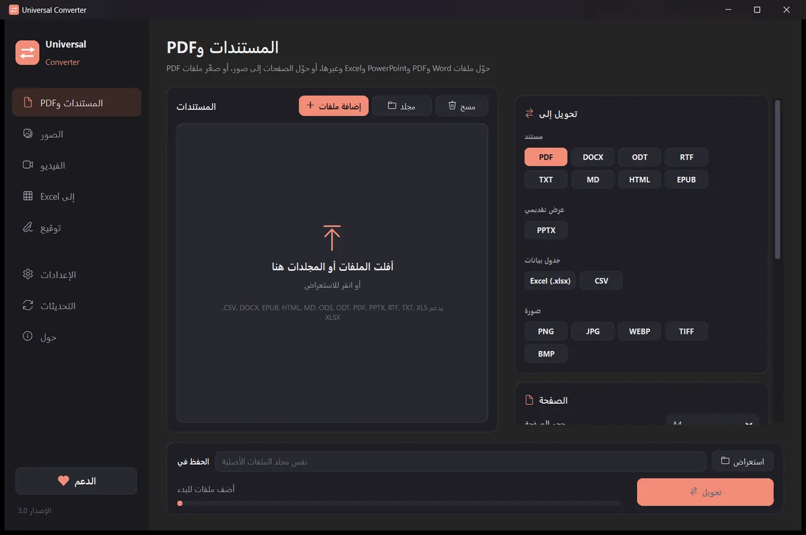

حوّل PDF إلى Word
يعيد Universal Converter بناء نص ملف PDF وعناوينه وجداوله وصوره في ملف Word يمكنك تحريره. تُقرأ ملفات PDF الممسوحة بالتعرف على النص (OCR).
مجاني · Windows 10 و 11، 64 بت · تقرير فحص الفيروساتهل يحظر Windows التنزيل أو التطبيق؟ احصل عليه من Microsoft Store بدلًا من ذلك: التطبيق المجاني نفسه، ويثق به Windows.
تنزيل لنظام Mac Apple silicon، macOS 12 أو أحدث
طريقة التثبيت والتحديث
- افتح ملف .dmg المنزّل واسحب Universal Converter إلى مجلد التطبيقات.
- افتح التطبيق. في المرة الأولى يحظره macOS لأنه غير موقّع من Apple: انقر «تم».
- افتح إعدادات النظام > الخصوصية والأمان، ومرّر للأسفل، وانقر «الفتح على أي حال» وأدخل كلمة المرور. تفعل ذلك مرة واحدة فقط.
التحديثات: إذا سمحت بذلك عند فتح التطبيق أول مرة، فإنه يتحقق من الإصدارات الجديدة في كل مرة يبدأ فيها، ويتحقق من توقيعها الرقمي، ويثبّتها عندما تختار.
تنزيل لنظام Android Android 10 أو أحدث
طريقة التثبيت والتحديث
- انقر «تنزيل لنظام Android» على هاتفك.
- افتح الملف المنزّل. إذا سأل Android، فاسمح للمتصفح أو مدير الملفات بتثبيت التطبيقات.
- انقر «تثبيت».
التحديثات: يتحقق التطبيق مرة يوميًا تقريبًا ويخبرك عندما يكون إصدار جديد جاهزًا. نزّله بالطريقة نفسها وثبّته فوق القديم؛ تُحفظ إعداداتك.
طريقة القيام بذلك
- افتح Universal Converter واختر المستندات وPDF من اليسار.
- اسحب ملفاتك أو مجلدًا كاملًا إلى النافذة، أو انقر «إضافة ملفات».
- اختر DOCX تحت «تحويل إلى».
- انقر «تحويل». تُحفظ الملفات الجديدة بجانب الأصول، أو في المجلد الذي تختاره.

لماذا دون اتصال؟
ينجز Universal Converter العمل على جهازك. تبقى ملفاتك خاصة، ولا مشكلة مع الملفات الكبيرة، ويعمل دون اتصال بالإنترنت.
أشياء أخرى يمكنه فعلها
- حوّل مستندات Word إلى PDF
- ادمج عدة ملفات في PDF واحد
- ضغط ملف PDF إلى الحجم الذي تختاره
- حوّل صفحات PDF إلى صور JPG
- حوّل مستندًا ممسوحًا إلى ملف Word قابل للتحرير
- حوّل الصور بين JPG و PNG و WEBP وغيرها
- غيّر حجم الصور أو صغّرها إلى حجم ملف معيّن
- ادمج الصور في ملف PDF واحد
- انسخ النص من صورة (OCR)
- اضغط فيديو دون رفعه
- حوّل الفيديو بين MP4 و MKV و WebM و MOV و AVI
- احفظ صوت فيديو بصيغة MP3
- أنشئ GIF من فيديو
- انقل الجداول من PDF إلى Excel
- حوّل كشف حساب مصرفي PDF إلى Excel
- استخرج الجداول من فواتير PDF إلى Excel
- توقيع ملف PDF
- ملء نموذج PDF